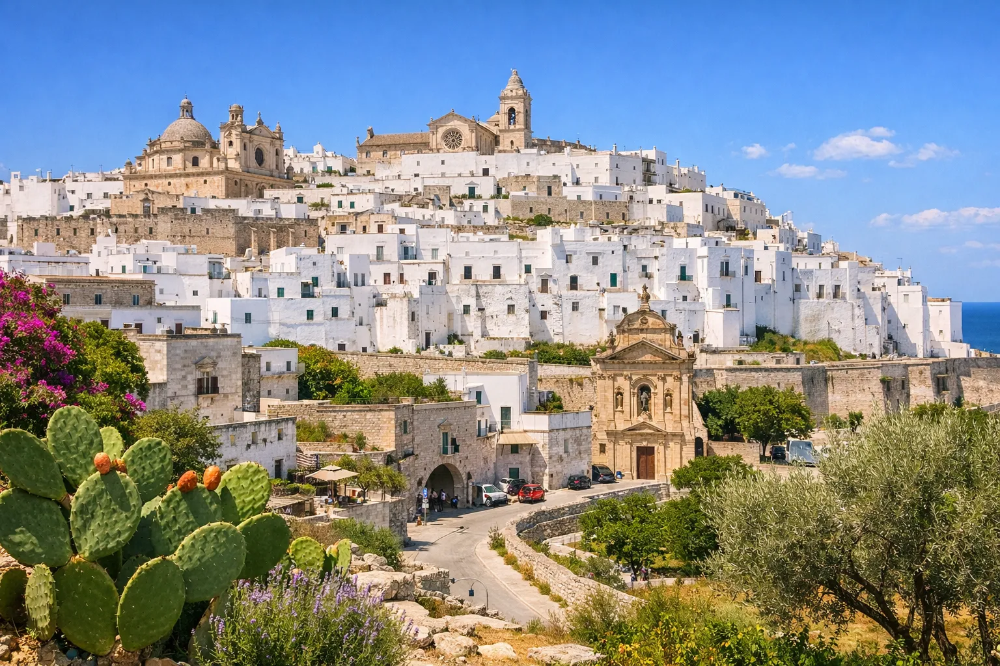
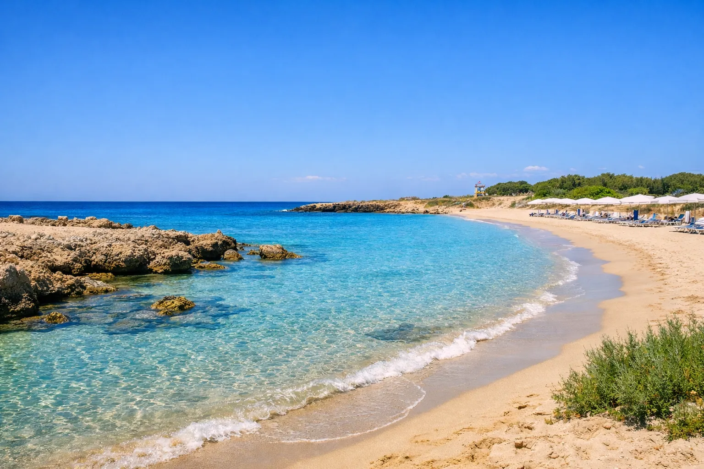
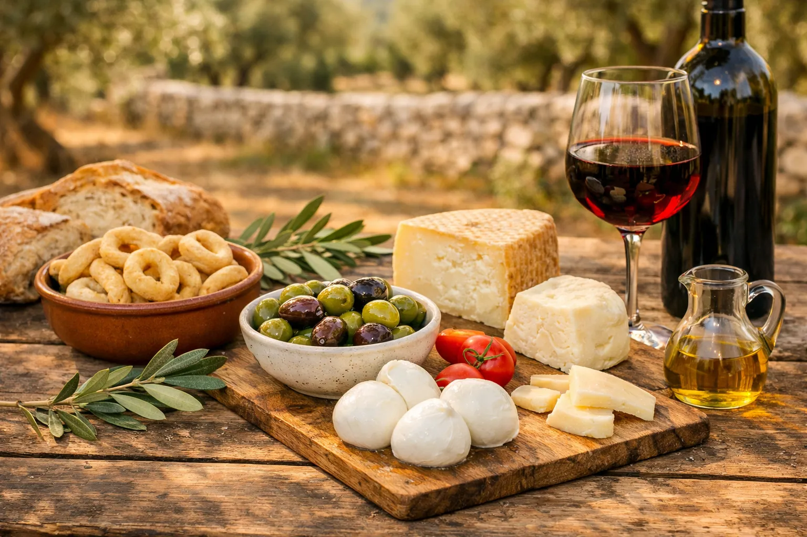

Scopri paesaggi, borghi e costa della Puglia.
Lamia Alvise è immersa nella bellezza della campagna pugliese — un luogo dove uliveti, borghi bianchi e spiagge cristalline sono tutti a breve distanza.

Esplora affascinanti borghi pugliesi come Ostuni, Cisternino e Martina Franca. Passeggia tra vicoli stretti, ammira le case imbiancate a calce e gusta la cucina locale nelle tradizionali trattorie.

La costa offre spiagge sabbiose, calette rocciose e acque cristalline. Che tu preferisca angoli tranquilli immersi nella natura o lidi attrezzati, la zona ha qualcosa per ogni gusto.

Vivi esperienze locali come degustazioni di olio d’oliva, tour in bicicletta, corsi di cucina e visite alle storiche masserie. La Puglia offre un ricco intreccio di cultura, natura e tradizione.